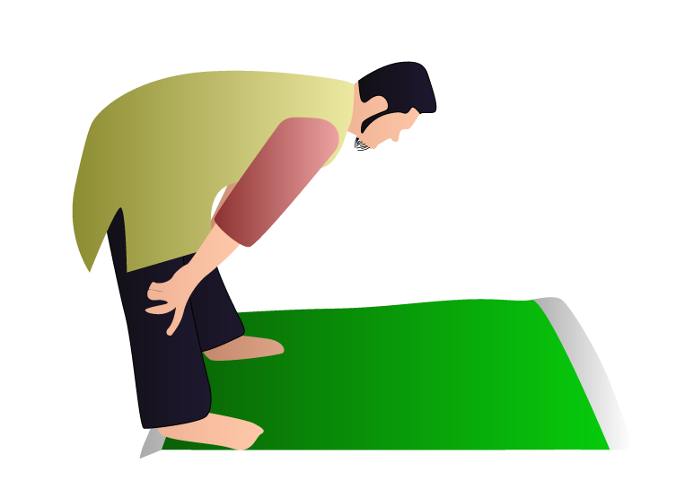
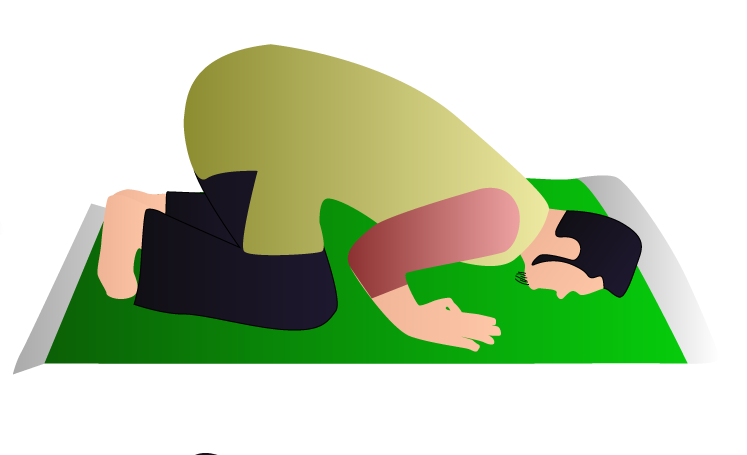
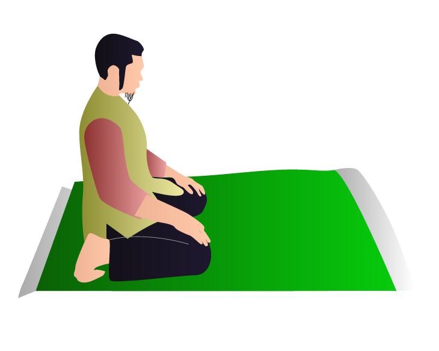
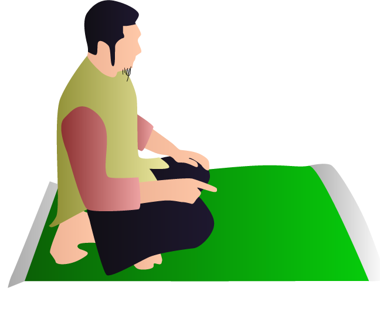

1.Hadits
Rasulullah SAW bersabda, الْعَهْدُ الَّذِى بَيْنَنَا وَبَيْنَهُمُ الصَّلاَةُ فَمَنْ تَرَكَهَا فَقَدْ كَفَرَ “Perjanjian antara kami dan mereka (orang kafir) adalah shalat. Barangsiapa meninggalkannya maka dia telah kafir.” (HR. Ahmad, Tirmidzi, An Nasa’i, Ibnu Majah. ) Nabi shallallahu ‘alaihi wa sallam bersabda, إِنَّ أَثْقَلَ صَلَاةٍ عَلَى الْمُنَافِقِينَ صَلَاةُ الْعِشَاءِ وَصَلَاةُ الْفَجْرِ وَلَوْ يَعْلَمُونَ مَا فِيهِمَا لَأَتَوْهُمَا وَلَوْ حَبْوًا “Sesungguhnya shalat yang paling berat dilaksanakan oleh orang-orang munafik adalah shalat isya dan shalat subuh. Sekiranya mereka mengetahui keutamaan keduanya, niscaya mereka akan mendatanginya sekalipun dengan merangkak.” (HR. Bukhari no. 657 dan Muslim no. 651)
2.Al-Quran
Allah Ta’ala berfirman, وَأْمُرْ أَهْلَكَ بِالصَّلَاةِ وَاصْطَبِرْ عَلَيْهَا لَا نَسْأَلُكَ رِزْقًا نَحْنُ نَرْزُقُكَ وَالْعَاقِبَةُ لِلتَّقْوَى “Dan perintahkanlah kepada keluargamu mendirikan shalat dan bersabarlah kamu dalam mengerjakannya. Kami tidak meminta rezki kepadamu, Kamilah yang memberi rezki kepadamu. Dan akibat (yang baik) itu adalah bagi orang yang bertakwa.” (QS. Thaha: 132). l
referensi: https://www.fiqihmuslim.com/2015/09/kumpulan-hadist-nabi-tentang-sholat.html
Isra' Mi'raj adalah peristiwa luar biasa di mana Allah Subhanahu wa Ta'ala memberikan hiburan kepada Rasulullah Muhammad ﷺ yang tengah berduka. Beliau sedang berduka atas wafatnya istri pertamanya, Khadijah radhiyallahu ‘anha, yang sangat dicintainya, serta paman beliau, Abu Thalib, yang menjadi pembela sejati. Kehilangan kedua sosok ini membuat posisi Rasulullah semakin terjepit di tengah intimidasi Quraisy di Makkah. Namun, Rasulullah tidak berdiam diri. Beliau berusaha melanjutkan dakwahnya dengan pergi ke Thaif, meskipun disambut dengan penolakan dan bahkan kekerasan. Setelah mengalami masa duka ini, Allah memberikan tasliyah (hiburan) kepada beliau melalui peristiwa Isra' Mi'raj. Isra' adalah perjalanan Rasulullah dari Masjidil Haram ke Baitul Maqdis dalam waktu singkat yang menakjubkan. Di sana, beliau mengimami para Nabi dan menerima perintah shalat lima waktu. Kemudian, Mi'raj adalah perjalanan beliau ke langit-langit yang lebih tinggi bersama malaikat Jibril. Di setiap langit, beliau bertemu dengan para Nabi dan menerima pesan-pesan penting. Salah satu momen penting dalam perjalanan ini adalah ketika Allah mengwajibkan shalat lima waktu, yang awalnya lima puluh kali sehari, namun kemudian dikurangi menjadi lima kali sehari setelah permohonan Rasulullah kepada Allah. Ini menunjukkan kebijaksanaan dan rahmat Allah kepada umat manusia. Dengan demikian, Isra' Mi'raj merupakan pengalaman spiritual dan tasliyah yang luar biasa bagi Rasulullah Muhammad ﷺ, di tengah-tengah cobaan dan kesulitan yang beliau alami.
Kita diperintahkan shalat dengan tata cara yang telah diajarkan oleh Nabi shallallahu ‘alaihi wa sallam, beliau bersabda: ﺻَﻠُّﻮﺍ ﻛَﻤَﺎ ﺭَﺃَﻳْﺘُﻤُﻮﻧِﻲ ﺃُﺻَﻠِّﻲ “Shalatlah kamu sebagaimana kamu melihatku shalat.” [HR. Bukhari]
1. Takbiratul Ihram

Jika Rasulullah Shallallahu ‘alaihi wa sallam berdiri untuk shalat, beliau menghadap ke arah Kiblat dan berdiri mendekat ke pembatas (sutrah). Beliau Shallallahu ‘alaihi wa sallam bersabda: إِنَّمَا اْلأَعْمَالُ بِالنِّيَّاتِ، وَإِنَّمَا لِكُلِّ امْرِئٍ مَا نَوَى. “Sesungguhnya amal itu tergantung niatnya. Dan sesungguh-nya setiap orang hanya mendapat (balasan) berdasarkan niatnya.” Beliau Shallallahu ‘alaihi wa sallam memulai shalat dengan ucapan: اَللهُ أَكْبَرُ. “Allah Mahabesar.” Beliau mengangkat kedua tangannya lalu meletakkan yang kanan di atas yang kiri di atas dada. Beliau mengarahkan pandangannya ke tanah (tempat sujud). Kemudian membuka bacaan dengan berbagai macam do’a (do’a istiftah), beliau memuji, menyanjung dan memuliakan Allah. Kemudian beliau memohon perlindungan kepada Allah dari godaan syaitan yang terkutuk (ta’awwudz).
Panduan Selengkapnya, kami telah bekerja sama dengan yufid tv dalam hal ini
2.Rukuk
Kemudian jika beliau selesai membaca, beliau diam sejenak. Setelah itu beliau mengangkat kedua tangannya, bertakbir, dan ruku’. Beliau letakkan kedua telapak tangannya pada kedua lutut lalu meregangkan jari-jemarinya. Beliau tekankan kedua tangannya pada kedua lututnya seakan-akan menggenggamnya. Beliau regangkan kedua sikunya ke samping sambil meratakan dan meluruskan punggungnya. Hingga andaikata dituangkan air di atasnya, niscaya air itu tetap tenang (tidak tumpah). Beliau berdiam agak lama saat ruku’ dan mengucapkan: سُبْحَانَ رَبِّيَ الْعَظِيْمِ (ثَلاَثًا) “Mahasuci Engkau, wahai Rabb-ku Yang Mahaagung.” (Diucapkan sebanyak tiga kali). Dalam rukun ini beliau mengucapkan banyak macam dzikir dan do’a. Terkadang mengucapkan ini, terkadang pula yang itu. Beliau melarang membaca al-Qur-an dalam ruku’ dan sujud.
3.I'tidal
Setelah itu beliau mengangkat punggungnya dari ruku’ sambil mengucapkan: سَمِعَ اللهُ لِمَنْ حَمِدَهُ “Allah mendengar orang yang memuji-Nya.” Ketika i’tidal ini beliau mengangkat kedua tangannya sambil membaca: رَبَّنَا وَلَكَ الْحَمْدُ. “Ya Rabb kami, hanya bagi-Mu-lah segala pujian.” Terkadang beliau membaca do’a lebih dari itu. Kemudian beliau bertakbir dan menyungkur sujud.
4.Sujud
Beliau Shallallahu ‘alaihi wa sallam bersabda: أُمِرْتُ أَنْ أَسْجُدَ عَلَى سَبْعَةِ أَعْظَمٍ: عَلَى الْجَبْهَةِ وَأَشَارَ بِيَدِهِ عَلَى أَنْفِهِ، وَالْيَدَيْنِ وَالرُّكْبَتَيْنِ وَأَطْرَافِ الْقَدَمَيْنِ. “Aku diperintahkan untuk bersujud di atas tujuh tulang: dahi -sambil menunjuk hidungnya dengan tangan- kedua tangan dan kedua lutut, serta ujung jari-jemari kedua kaki.” Beliau juga pernah mengatakan: لاَ صَلاَةَ لِمَنْ لاَ يُصِيْبُ أَنْفَهُ مِنَ اْلأَرْضِ مَا يُصِيْبُ الْجَبِيْنَ. “Tidak (sempurna) shalat orang yang tidak menempelkan hidungnya ke tanah sebagaimana menempelkan dahinya.” Beliau berdiam sejenak dalam sujudnya sambil mengucapkan: سُبْحَانَ رَبِّيَ اْلأَعْلَى. (ثَلاَثًا) “Mahasuci Rabb-ku Yang Mahatinggi.” (Diucapkan tiga kali) Terkadang beliau juga membaca berbagai macam dzikir dan do’a, terkadang ini dan terkadang itu. Beliau memerintahkan untuk bersungguh-sungguh dan memperbanyak do’a pada rukun ini.
5.Duduk Iftirasy
Kemudian beliau mengangkat kepala sambil bertakbir, lantas menggelar kaki kirinya dan mendudukinya (duduk iftirasy) dengan tenang. Beliau tegakkan telapak kaki kanannya sambil menghadapkan jari-jari telapak kaki kanan tersebut ke Kiblat. Lalu beliau mengucapkan: اللّهُمَّ اغْفِرْ لِـي وَارْحَمْنِى، وَاجْبُرْنِي وَارْفَعْنِي، وَاهْدِنِي، وَعَافِنِي، وَارْزُقْنِي. “Ya Allah, ampunilah aku, kasihilah aku, cukupilah kekurangan-ku, angkatlah derajatku, tunjukilah aku, maafkanlah aku, dan berilah rizki kepadaku.”
6.Tahiyat Awal
Kemudian beliau bertakbir dan melakukan sujud kedua sebagaimana yang pertama lalu mengangkat kepalanya sambil bertakbir. Kemudian bangkit duduk tegak di atas kaki kirinya hingga tulang-tulang kembali pada tempatnya semula (duduk istirahat). Kemudian bangkit ke raka’at kedua dengan bertumpu pada tanah. Beliau melakukan raka’at kedua sebagaimana raka’at pertama. Hanya saja beliau melakukannya lebih singkat daripada yang pertama. Kemudian beliau duduk tasyahhud seusai raka’at kedua. Jika shalat terdiri dari dua rak’at, maka duduk iftirasy sebagaimana duduk di antara dua sujud. Begitupula pada raka’at kedua dari shalat yang berjumlah tiga atau empat raka’at. Jika beliau duduk tasyahhud, beliau letakkan telapak tangan kanannya di atas paha kanannya dan meletakkan telapak tangan kirinya di atas paha kirinya. Beliau buka tangan kirinya dan menggenggamkan tangan kanannya di atas paha kanannya sambil menunjuk dengan jari telunjuknya dan memusatkan pandangan padanya. Jika beliau mengangkat telunjuknya, beliau menggerak-gerakkannya dan berdo’a dengannya. Beliau bersabda, “Dia memiliki (pengaruh) yang lebih dahsyat terhadap syaitan daripada besi.” Maksudnya telunjuk tadi.
7.Tahiyat Akhir
Beliau lantas membaca tahiyyat pada setiap dua raka’at. Beliau bershalawat bagi dirinya sendiri pada tasyahhud awal maupun yang seterusnya. Dan beliau mensyari’atkan hal ini pada umatnya. Dalam shalatnya beliau mengucapkan banyak do’a yang beraneka ragam. Beliau kemudian mengucap salam sambil menoleh ke kanan dan mengucap: “اَلسَّـلاَمُ عَلَيْكُمْ وَرَحْمَةُ اللهِ (semoga kesejahteraan dan rahmat Allah terlimpahkan atas kamu sekalian.” Begitupula pada yang kiri. Beliau terkadang menambah kalimat “وَبَرَكَاتُهُ (dan berkah-Nya)” pada salam pertama.